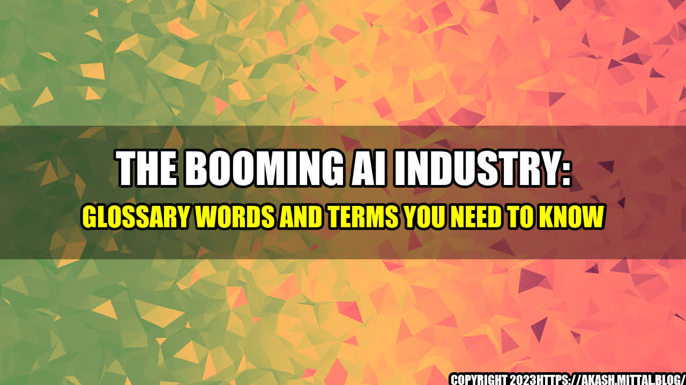

How AI is Changing the World We Live In

It was a Monday morning and Jane was running late for her first day at the new job. She was excited to start working at the tech company where she would be working as an AI engineer. Jane had always been fascinated by the idea of creating machines that could think and learn on their own. She was curious to know what it would be like to work in an industry that was fast-paced, constantly evolving and had the power to transform the world we live in.
As she entered the office, she was greeted by her team leader who showed her around and introduced her to the company's latest project. He explained how they were using machine learning algorithms to optimize the company's search engine and improve user experience. Jane was amazed to see how much progress had been made in the field of AI and how it was being used to solve real-world problems.
This is just one example of how AI is changing our lives. From healthcare to entertainment, from transportation to agriculture, AI is becoming a fundamental part of our society. It's no longer a futuristic concept but rather a present reality that is shaping our future.
Glossary Words and Terms to Know About the Booming AI Industry
The following are some of the most important terms and glossary words you need to understand the artificial intelligence revolution:
- Artificial Intelligence (AI) - The simulation of human intelligence in machines that are programmed to think, learn, and adapt on their own.
- Machine Learning - A type of AI that allows machines to learn from data without being explicitly programmed to do so.
- Deep Learning - A type of machine learning that uses neural networks with multiple layers to improve the accuracy of predictions.
- Natural Language Processing (NLP) - The ability of machines to understand and interpret human language.
- Computer Vision - The ability of machines to understand and interpret visual information.
- Big Data - Extremely large datasets that can be analyzed to reveal patterns, trends and associations, especially related to human behavior and interactions.
- Internet of Things (IoT) - The interconnection of physical devices, vehicles, buildings, and other items embedded with electronics, software, sensors, and network connectivity that enable them to collect and exchange data.
- Robotics - The study of robots, including their design, use, and application.
- Automation - The use of technology to mechanize and streamline repetitive, time-consuming manual tasks.
- Augmented Reality (AR) - A technology that superimposes a computer-generated image on a user's view of the real world, typically through a smartphone camera or wearable headset.
- Virtual Reality (VR) - A technology that creates an immersive, computer-generated simulation of a three-dimensional environment that can be interacted with in a seemingly real way.
AI in Action
The following are some examples of how AI is being used in different industries:
Healthcare - In 2020, IBM Watson Health partnered with the Cleveland Clinic to develop an AI-powered tool that can predict the likelihood of a patient developing cardiovascular disease. The tool uses machine learning algorithms to analyze a patient's medical history, lifestyle habits, and other factors to generate personalized risk assessments and recommendations.
Retail - Amazon's AI-powered recommendation engine generates 35% of the company's revenue by suggesting products that customers are likely to be interested in based on their browsing and purchase history, as well as their demographic profile and other factors.
Finance - JP Morgan Chase is using machine learning algorithms to process loan applications faster and more accurately than ever before. The system can analyze thousands of data points in seconds, including a borrower's credit history, employment status, income, and other factors to determine whether or not to approve the loan.
Conclusion
In conclusion, AI is transforming the world we live in and is becoming a fundamental part of our society. The glossary words and terms we have listed here are just a few of the many concepts and technologies that are driving the AI revolution forward. Here are three key takeaways:
- The possibilities of AI are endless. From healthcare to entertainment, from transportation to agriculture, AI is being used to solve real-world problems and improve our lives in many ways.
- The rapid pace of development in AI means that companies and individuals need to keep up with the latest trends and technologies to stay competitive and relevant.
- As with any powerful technology, AI needs to be developed and used responsibly to ensure that it benefits society as a whole and minimizes potential negative consequences.
Curated by Team Akash.Mittal.Blog
Share on Twitter Share on LinkedIn